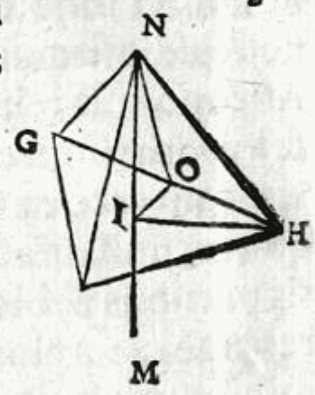

Caput XIII: De computandis orbibus qui corporibus inscribuntur, et circumscribuntur¶
Hactenus nihil dictum, nisi consentanea quaedam signa, et εἰκότα suscepti Theorematis. Transeamus modo ad ἀποστήματα orbium Astronomiae et demonstrationes Geometricas: quae nisi consentiant, procul dubio omnem praecedentem operam luserimus. Primum omnium videamus, in quanta proportione sint orbes singulis his quinque corporibus regularibus inscripti ad circumscriptos.
Et radii quidem sive semidiametri circumscriptorum aequant semidiagonios corporum. Nam nisi omnes Anguli figurae tetigerint eandem superficiem, corpus regulare non erit. Bini autem Anguli oppositi mutuo, et centrum figurae semper sunt in eadem linea sive axi orbis. Excipitur unum Tetraedron, quod habet singulos angulos singulis facierum centris oppositos.
Iam recta connectens centra figurae et basis est radius sive semidiameter inscripti per ultimam lib. 15. Campani in Euclidem. Orbis enim inscriptus tangere debet omnia centra figurae; et figurae inscriptae cum circumscriptis omnes possident idem centrum.
Quod cum ita sit, facile est videre, potentiam radii, quo circulus basi circumscribitur, auferendam de potentia radii orbis circumscripti, ut residua sit potentia quaesitae lineae seu radii orbis inscripti. In adiuncto schemate HOM est axis circumscripti orbis, cuius ut et figurae inscriptae commune centrum in O, HGL planum unum figurae, quod hic sit basis, I centrum basis, HI radius circumscripti basi. Et recta ex centro orbis O in I centrum minoris circuli demissa perpendicularis erit circulo et lineae HI. In triangulo igitur HIO angulus ad I rectus. Ergo HO potentia aequat potentias HI OI. Et potentia HI ablata ex HO potentia, relinquit OI potentiam quaesitam, per 47. primi ([I.47]).

Hinc apparet, ut habeatur IO in omnibus figuris, quaerendam esse prius HI radium basis. Habetur autem ex HI radius cognito latere figurae, cui circulum circumscribit. Hinc rursum, ut radius basis habeatur, quaerendum prius latus cuiuslibet figurae.
Assumpto igitur radio circumscripti cuiuslibet in quantitate sinus totius 1000. partium (sufficit nostro instituto haec radii magnitudo) potentia lateris cubici per 15. prop. lib. 13. elem. Euclidis, est pars tertia potentiae axis, ut si axis habet 2000. latus cubi habet 1155. Lateris octaedri potentia per 14. eiusdem, est dimidium potentiae axis. Lateris Tetraedrici potentia est per 13. eiusdem, sesquialtera pars de potentia axis. Atque hactenus usui fuit aureum illud theorema Pythagorae de potentiis laterum in triangulo rectangulo, prop. 47. lib. 1 ([I.47]). In caeteris duobus corporibus altero illo Geometriae thesauro opus est, de linea secundum extremam et mediam rationem secta (sectio divina), qui est propositio 30. sexti ([VI.30]). Nam Dodecaedricum latus est maior portio lateris cubici secti, secundum extremam et mediam rationem per corollar: 17. decimi tertii. Sic pro Icosaedrico latere inveniendo quaeritur primum radius illius circuli, qui quinque Icosaedri tangit angulos, qui est AC in circulo AB. Eius potentia est quinta pars de potentia axis, per corollar: 16. tredecimi. Igitur per 5. et 9. eiusdem, radii istius AC, secundum extremam et mediam rationem secti, maius segmentum AD est latus decanguli, quod eidem AB circulo inscribi potest.
Iunctae igitur potentiae AC radii totius, et AD maioris segmenti huius, faciunt potentiam EF lateris quinquangularis in illo circulo, per 10. decimi tertii. Quod cum sit inter duos Icosaedri angulos, erit utique latus Icosaedri, per 11. et 16. eiusdem.
Habemus latera omnium figurarum in proportione ad axin orbis circumscripti. Sequitur ut radios circulorum qui basibus circumscribuntur, investigemus ex iam notis lateribus: id quod adminiculo sinuum facillime assequetur quilibet, qui reputabit, hic exquisitissimis numeris non opus esse. Si tamen alicui placet artificiosius laborare; ei fundamenta rei ex Euclide apponam. Cum igitur tres saltem formae sint basium, triangula, quadrangula, quinquangula: in triangularibus quidem, latus GH potest triplum
quaesiti radii HI, per 12. saepe allegati: In quadrato latus GH potest duplum quaesiti radii: in quinquangulo denique GH lateris et KH subtendentis (datarum linearum) iunctae potentiae possunt quintuplum radii HI quaesiti, per 4. decimi quarti secundum Campanum. Habemus radios circulorum in basibus in eadem proportione, qua latera.
Subtractis igitur potentiis radiorum de potentia sinus totius, qui est quantitas semidiametri sive radii in circumscripto: restabunt, ut supra probatum est, potentiae radiorum, quos quaerimus, inscriptorum scilicet orbium. Commodius tamen et facilius uteris ut dixi sinubus.
Sed hic neque alia quaedam praetereunda compendia, ne nimium operose laboremus. Primum orbes inscripti Dodecaedro et Icosaedro sunt eiusdem amplitudinis, si figurae eidem orbi inscribantur. Habent enim bases utriusque figurae eundem radium per 2. decimi quarti. Idem iudicium esto de cubo et octaedro. Nam axis potest triplum cubici lateris, et hoc duplum radii in basi, ergo axis potest sextuplum radii in basi: in octaedro vicissim, axis potest duplum lateris, et hoc triplum radii in basi. Potest ergo etiam hic axis sextuplum radii. Cum ergo sit ex hypothesi idem radius circumscriptorum sive HM (in primo huius capitis schemate) sitque idem etiam radius basium HI, et IOH semper rectus: Ergo etiam radius inscriptorum, tertium nempe latus OI, idem erit per 26. primi conversam. Quare habitis cubi et Icosaedri inscriptis, de Octaedro et Dodecaedro nihil opus inquirere.
Deinde in cubo cum ipsum latus sit altitudo figurae: dimidium latus dimidia erit altitudo, nempe linea connectens centra figurae et basis. Nil igitur opus inquisitione radii in basi.
Tertio Octaedri et pyramidis aequalium laterum est eadem altitudo. Quanto maius igitur latus pyramidis, tanto altior etiam ipsa figura. Item Octaedron et pyramis duplo maiorum laterum habent eundem orbem inscriptum. Nam pyramis si secetur mediis lateribus, concidit in quatuor pyramidas et Octaedron unum, duplo minorum laterum. Cumque pyramis habeat quatuor facies; nulli earum resecta pyramis minor adimit centrum, utpote quod sectione longe inferius est: manet igitur in Octaedro ex se-
f. 0057 · p. 47cto orbis inscriptus, antiqua quatuor centra, et per definitionem regularis corporis etiam nova quatuor ex sectione accedentia simul tangens. Sive igitur pyramidis sive Octaedri vel cubi inscriptus prius habeatur, facillime per proportionem laterum habebitur etiam quantitas alterius inscripti.
His adde quae Candalla, et quae alii de corporibus iam demonstrarunt, ut quod potentia NM dimetientis in sphaera, quae Tetraedro circumscribitur, sit potentiae HI radii in basi tetraedri \(4\frac{1}{2}\) per Coroll. 1. prop. 13. lib. decimi tertii: Quod ibidem NI altitudo sive perpendicularis corporis sit bes NM dimetientis, et illius NI potentia sit bes potentiae lateris GH: Quod inscripti pyramidi radius OI sit pars quarta ipsius NI perpendicularis, tertia ipsius NO circumscripti, vel sexta NM dimetientis, Corollar. 3. prop. 13. lib. decimi tertii iuxta Candallam.


Ergo; qualium semidiameter orbis circumscripti cuilibet figurae est par. 1000. talium est in:
Corpus |
Longitudo lateris |
Semidiameter circuli plano circumscripti |
Semidiameter inscripti orbis |
|---|---|---|---|
Cubo |
1155 |
\(816\frac{1}{2}\) |
577 |
Pyramide |
1633 |
943 |
333 |
Dodecaedro |
714 |
607 |
795 |
Icosaedro |
1051 |
607 |
795 |
Octaedro |
1414 |
\(816\frac{1}{2}\) |
577 (707. quadrato Octaedri inscripti circuli. Quod nota:) |